Falcon 1e
First Flight Date
(proposed around) 2008-2010
Cost Per Launch
11,000,000$
Height and Mass
supposed to carry ~1000 kg to orbit (LEO)
An upgraded version of Falcon 1 (“1e”). It was planned to have a bigger payload capacity than standard Falcon 1. However, due to limited demand, it was withdrawn from the market before many (or any) operational flights.
Suborbital
First Flight Date
Not Available
Cost Per Launch
Not Available
Height and Mass
Not Available
There have been smaller rockets or test vehicles (for example early prototypes, suborbital testbeds, etc.), but none became full orbital rockets apart from the major four. Most of them are experimental, not well documented in terms of cost/height.
Falcon 1
First Flight Date
2006/03/24
Cost Per Launch
6,700,000$
Height and Mass
21 m / 27,670 kg
 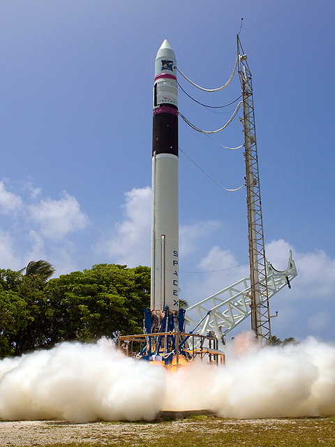
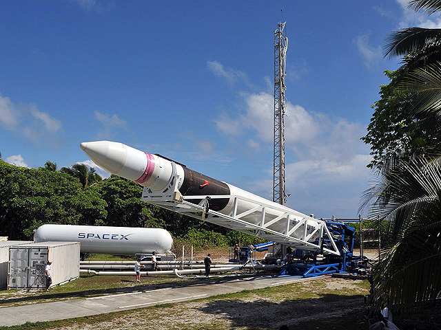
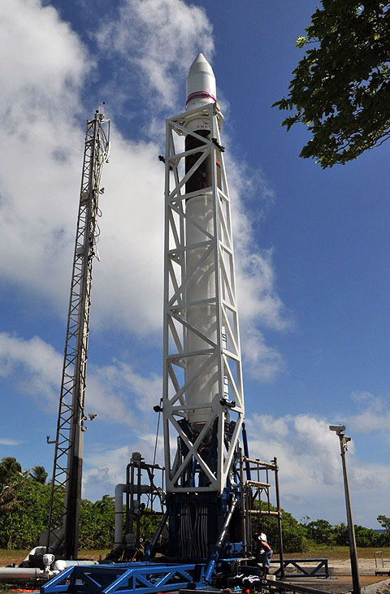
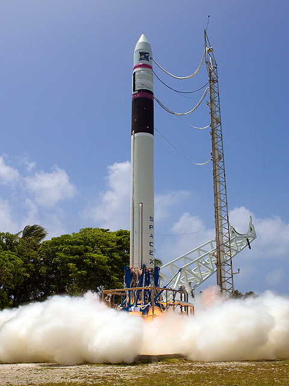
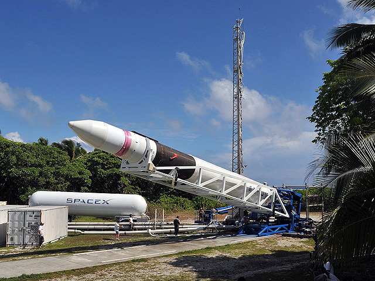
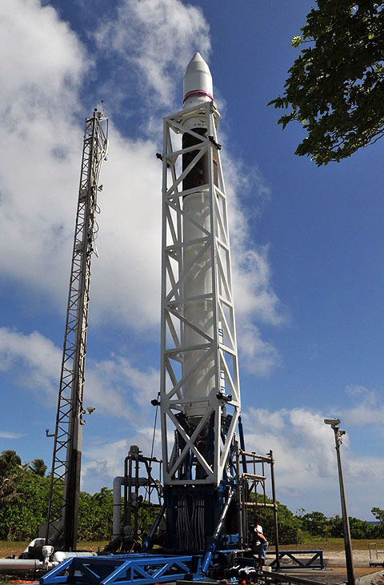
Falcon 1 was SpaceX’s first orbital launch vehicle and the first privately developed liquid-fueled rocket to reach orbit. Designed to carry small payloads into low Earth orbit, it used a single Merlin engine in its first stage and a Kestrel engine in its second stage, both burning RP-1 and liquid oxygen. Although its first three launches failed, SpaceX succeeded on its fourth attempt in 2008, marking a historic milestone for private spaceflight. Falcon 1 laid the foundation for the company’s later successes with Falcon 9 and Falcon Heavy, proving that reusable, cost-effective rocketry was possible.
Falcon 9
First Flight Date
2010/06/04
Cost Per Launch
67,000,000$
Height and Mass
70 m / 549,054 kg


 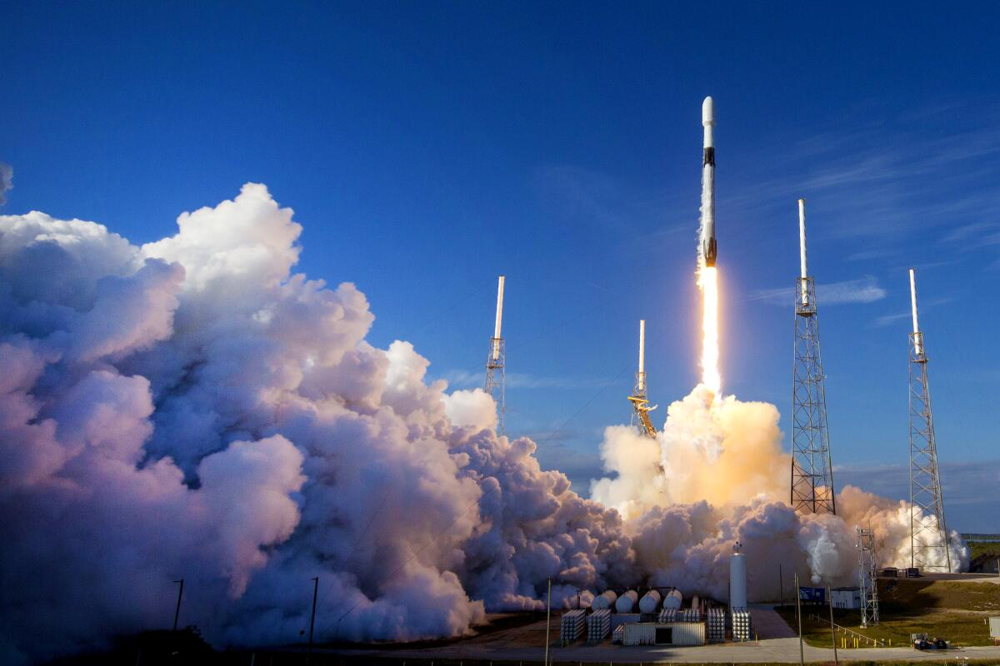
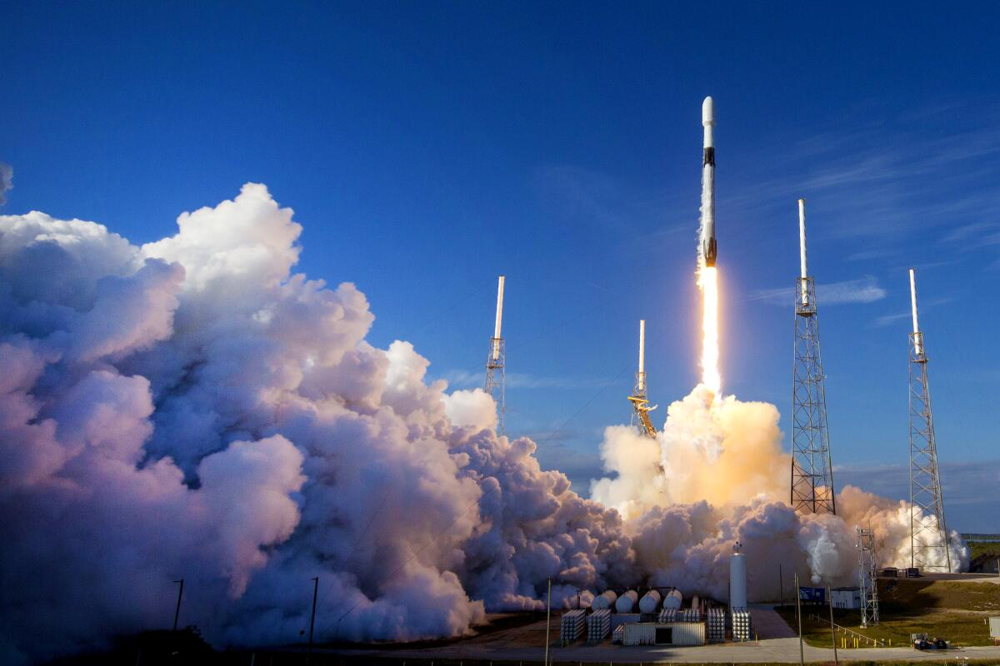
Falcon 9 is a two-stage reusable rocket designed and built by SpaceX for transporting satellites, cargo, and crew to orbit. Powered by nine Merlin engines on the first stage, it uses RP-1 and liquid oxygen as propellants. Falcon 9 revolutionized space travel through reusability — its first stage can autonomously land on a drone ship or landing pad after launch, drastically lowering costs. It has become the world’s most reliable and frequently launched rocket, used for NASA crew missions, Starlink satellite deployments, and commercial payloads.
Falcon Heavy
First Flight Date
2018/02/06
Cost Per Launch
90,000,000$
Height and Mass
70 m / 1,420,788 kg
 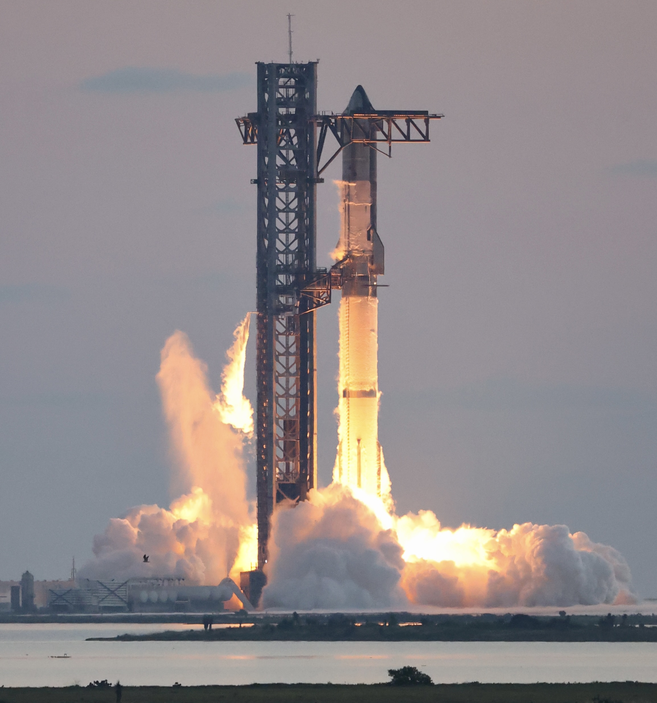
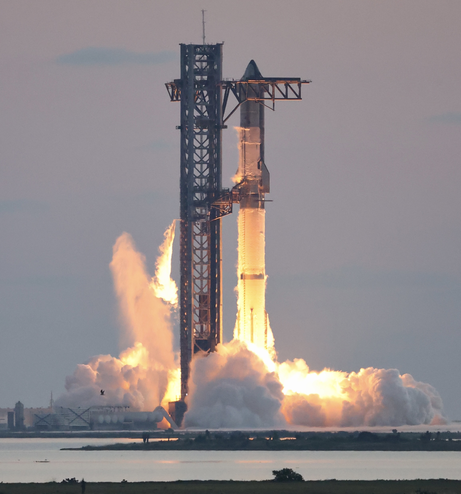
 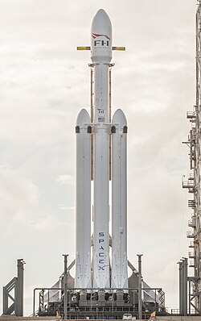
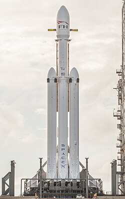
Falcon Heavy is currently the most powerful operational rocket in the world. It consists of three Falcon 9 first-stage boosters strapped together, producing over 5 million pounds of thrust at liftoff. Designed for heavy payloads, it can carry large satellites, interplanetary probes, and future crewed missions beyond Earth orbit. Like Falcon 9, its side boosters are reusable and can land simultaneously, creating one of the most spectacular sights in modern rocketry. Falcon Heavy represents SpaceX’s push toward deep-space missions and heavy cargo transportation.
Starship
First Flight Date
2023/04/20
Cost Per Launch
2,000,000$
Height and Mass
120 m / 5,000,000 kg


Starship is SpaceX’s next-generation fully reusable spacecraft and rocket system, designed to carry up to 150 tons of payload to orbit and beyond. Comprising the Super Heavy booster and the Starship upper stage, it is powered by SpaceX’s advanced Raptor engines using methane and liquid oxygen. Starship aims to enable human settlement on Mars, long-duration space travel, and rapid point-to-point transportation on Earth. With its stainless steel body and massive lift capacity, Starship represents the future of affordable, reusable, and sustainable spaceflight.